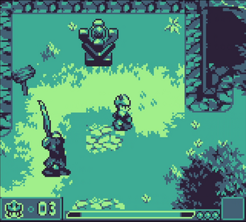
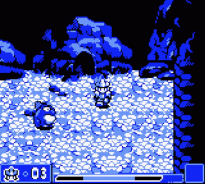
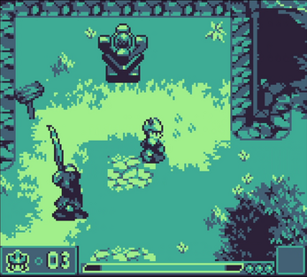
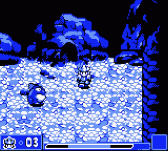

Lost Sword Citadel (gamejam)
This game was made for the 9th GBJAM (Gameboy-themed gamejam), with a group of buddies I knew from my old forum-going days. The gamejam lasted one week - I programmed most of it, using Unity. I hadn’t ever used Unity before so this was an opportunity to learn on the spot (I already had extensive experience using C#, though).
You can play the game directly in your browser, over on the official page on itch.io
Here are some screenshots of the game:

  
  
And here are some GIFs roughly showing how it plays:


The main gameplay gimmick is that the A button shoots projectiles, and B button locks the player’s facing direction, which allows strafing. The game has 3 orbs that the player must collect, each granting him a new elemental projectile-modifying ability. These elemental effects vary as to what they do (ice slows down, fire deals plenty of damage, and lightning deals moderate damage, while periodically stunning) - these effects also spread around to nearby enemies (and to the player!).
After the gamejam, I spent a little while fixing several glaring issues with the game’s engine, though I must admit it is quite a challenge to get a nice, stable “fake 3D” engine in Unity (mostly due to how Unity handles collisions).
If I were to get back to working on this, the main idea I wanted to implement was to make the key equippable items alter how the B button works. You would start with nothing on the B button, then quickly learn the “facing-lock”. Afterwards, you could have the ability to run, to jump, to carry objects. If this idea sounds very much like a classic Zelda game, then I can only say “guilty”